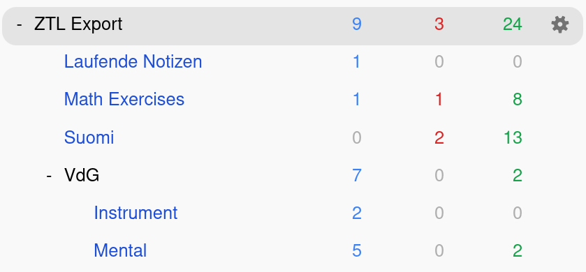
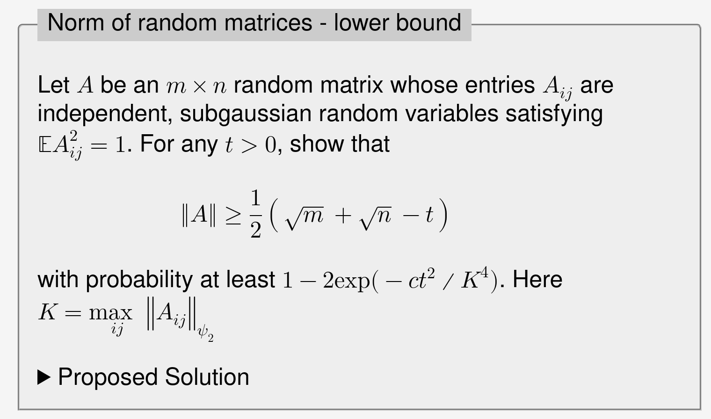
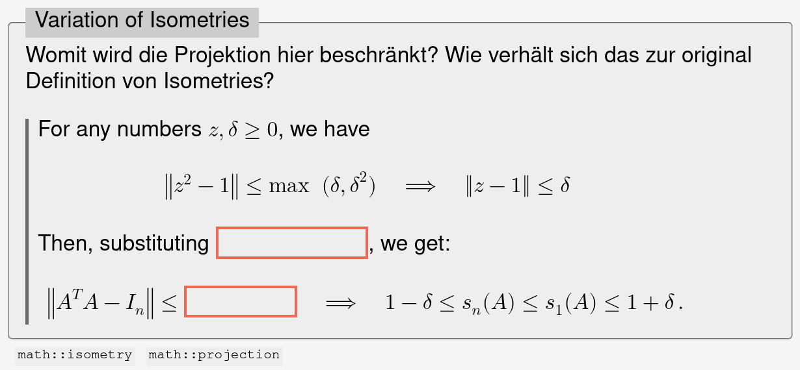
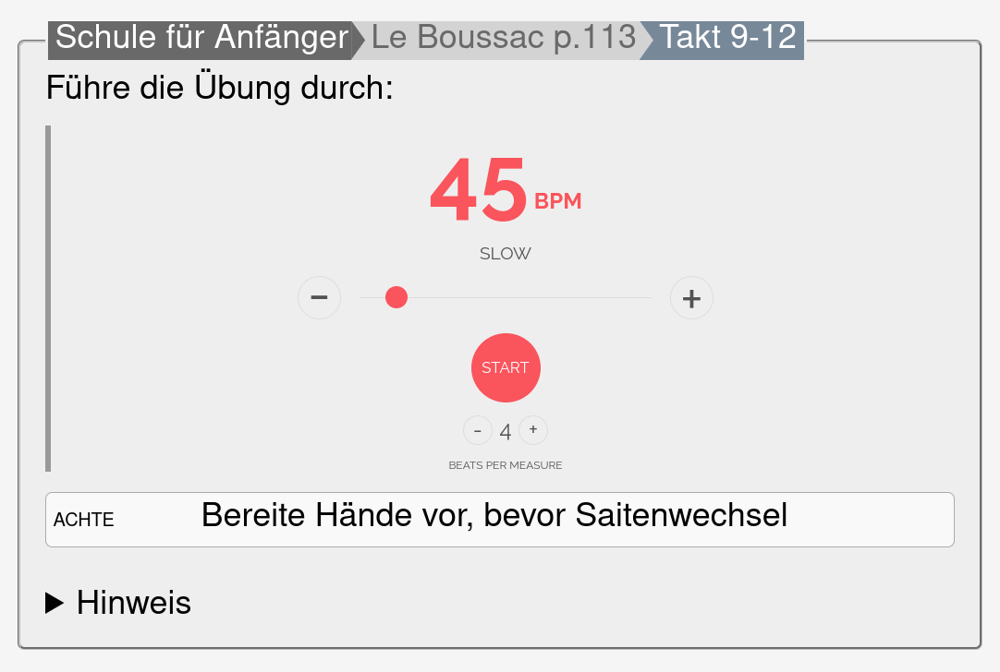

Notes on Recall Practice
For the last five month I have used spaced repetition again more extensively, not only for vocabulary learning, but also in other domains such as math and instrument learning.
This post collects some observations I made, and gives examples how they are making life easier. The cards are generated with ZTL from my set of notes and imported to Anki.
Tagging is great
Tagging1 provides more flexibility than organizing cards rigidly into decks with pre-chosen topics. You can have overlapping groups, such as studying grammar for all languages or all card types of a single language. Furthermore, you can decide to study a specific group from your pool of cards, cross decks and cross topics.
Read the ankiweb to understand how you can create filtered decks from tags. In my case this looks like (tag:ztl is:new) OR (tag:ztl is:due) filtering for new and due cards. You can combine tag lenses with OR patterns.
Furthermore, tags provide slightly more context when displaying the card and hence makes the review more immersive.
My current Anki decks looks like this, all decks are custom Filtered Decks, only the “ZTL Export” is real:

Anki provides focus
Learning programs, such as Anki or Supermemo, are effective because of their spaced-repetition approach to review. Another powerful side-effect I recently observed, it that they reduce distractions for me. I can open the deck without having to go through the trouble of finding some text and be visually distracted. And I only see content I have curated beforehand, which is an important exercise in self-awareness.

Postponing is a useful feature
I wasn’t aware that you can “postpone”2 a card. If I’m stuck at a new card or somehow cheated by looking up a partial solution, I will just postpone until tomorrow. That sounds like an obvious thing, but it gives my mind some time to forget or reorder the content.
Postponing brings a card up again the next day, without changing it review cycle. The shortkey for postponing is the - symbol.
Especially for my math exercises, I postpone until I come up with a solution. Then I recall for 3-4 more cycles, and finally set my solution to the outer note. This approach is quite heuristic, but works well for me.
Combining cards and notes is powerful
Embedding cards definition into the context of a note brings
additional information for rendering the card. My simplest
card class wip has no fields and just brings the note into
view:
# i5w46d Beobachtungen eines Praktizierenden
1. Recognition ersetzt immer noch kein Recall
Etwas abzurufen ist der wichtige Schritt beim Lernen einer
Tätigkeit. Dies lässt sich durch bloßes (wieder) Erkennen nicht
[...]
<card class="wip" />
Another example is a note I want to recall with clozes attached. Then a simple:
<card class="cloze" hide="d">
<q>Why is the lower bound trivial?</q>
<tags>math::operator-norm</tags>
</card>
generates clozes for the outer note, whose relevant parts are wrapped
in spans with d class:

Physical skill learning is still hard
Recently, I was inspired by this reddit post about the role of visualization in physical skill learning.
I suggest making two identical decks: Salsa Mental and Salsa Physical.
Use the mental deck to practice visualizing techniques. Create complete mental images of yourself doing the techniques to a salsa beat. By “complete” I mean don’t just recall what the technique “looks like”, visualize what every part of your body is doing.
Use the physical deck when you have the opportunity to physically practice.
For dancing I find it difficult to imagine my whole body, but instrument playing is more limited in scope. For each definition, I create two cards.
The first provides a description what to take attention to, and optionally an musical context, and asks for a recording with instrument.
The second provides a recording, and asks for the list to take attention of. This card happens without instrument by only imaging playing it.

Of course, spaced repetition only works with yes-no responses, and not continuous variables such as playing speed. For me it counts when I can play or imagine playing the phrase without hesitation.